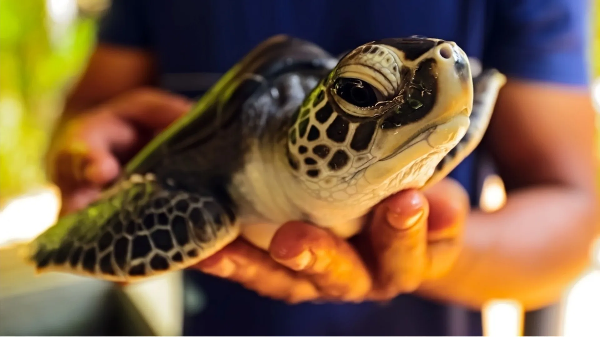

-

- Home
- Turtle Catgories
- Hikkaduwa Turtle Hatchery
- Threats to Turtles
- Other Turtle HatcheriesKosgoda Bentota
- Purchace and Donate

The Hikkaduwa Turtle Hatchery, located in the Sri Lankan coastal town of Hikkaduwa, is an important conservation site dedicated to the protection of sea turtles. The hatchery is dedicated to the preservation of the Olive Ridley, Green, Hawksbill, and Loggerhead turtle species. Visitors can participate in guided tours to learn about turtle conservation, nesting practices, and the problems that these magnificent creatures face. The hatchery is critical in guaranteeing sea turtle survival by protecting nests, controlling hatching, and releasing hatchlings into the ocean.
The Hikkaduwa Turtle Hatchery serves as both a rehabilitation center and a sanctuary for injured or sick turtles. Visitors have the opportunity to witness the nurturing and rehabilitation of injured turtles, gaining insight into the efforts taken to help them recover. The hatchery's knowledgeable staff provides valuable information about the rehabilitation process, highlighting the challenges and successes of their work. This experience offers a unique chance to witness firsthand the care provided to these incredible creatures.
A trip to the Hikkaduwa Turtle Hatchery frequently includes the amazing experience of witnessing or participating in turtle releases. Depending on when you come, you may have the opportunity to participate in the releasing of hatchlings into the sea. This is not simply a happy occasion, but also a practical contribution to sea turtle conservation. Visitors who participate in the release actively contribute to the preservation of these endangered species and gain a better understanding of the critical role they play in marine ecosystems.
LOCATION:
BOOK NOW